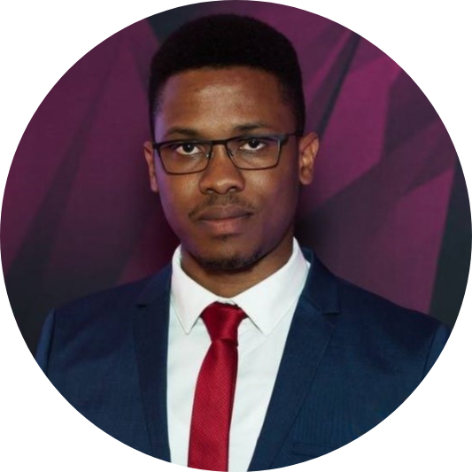

|  |
Chibueze Cyril Akaluka
19 Pae 23a, Lasnamäe, Tallinn, Estonia
Phone: +372 532 45984 • Email: akalukacyril@gmail.com
|
R E S U M E S U M M A R Y
Over two and half years of experience with developing software programs
for testing customer products to meet specified requirements. A creative
mind with focus on using proven technologies and methods in solving
current software engineering problems. Skilled at critical thinking with
strong adherence to applying iterative and incremental steps towards
achieving the overall goal in a software development process.
A R E A S O F E X P E R T I S E
-
Advanced knowledge and solid background in computer development software
including C#, .Net, C++, C.
-
Advanced knowledge in hardware description languages including VHDL,
Verilog, System Verilog.
-
Committed to delivering stakeholder project objectives as well as
results to the end users.
-
Well organized and committed to task completion whilst providing quality
software programs.
-
Ability to think critically about a problem and devise solutions using
logical reasoning and strong attention to detail.
C A R E E R E X P E R I E N C E
| Test Development Engineer |
March 2018 – present |
| Ericsson Eesti AS, Tallinn, Estonia |
-
Identify or select test cases for automation from test case
documentation.
- Create and verify test methods for test automation.
-
Create design specifications for test and troubleshooting of device
under test.
- Create, enhance, debug and execute test cases.
-
Support product designers in prototype debugging and performance
evaluation.
-
Suggest and implement improvements, modifications to test systems and
development process.
| Test Development Engineer Intern |
July 2017 – February 2018 |
| Ericsson Eesti AS, Tallinn, Estonia |
-
Researched and developed a simpler and cost-effective method for
automatically testing LEDs using FPGA and miniature camera to replace
pre-existing third-party instrument.
| Micros Product Specialist |
October 2013 – June 2016 |
| Ericsson Eesti AS, Tallinn, Estonia |
-
Performed Micros POS software Installations, configurations, training,
live cover and support for clients including Hotels, Bars, Night clubs
and lounges.
-
Installed servers, customized, tested and maintained Micros POS system
software.
- Installed and upgraded Oracle/MSSQL databases.
-
Performed daily activities to support customer business areas including,
but not limited to, query analysis, report development, and first level
troubleshooting.
E D U C A T I O N
|
Master of Science in Computer and Systems Engineering
|
September 2016 – June 2018 |
| Tallinn University of Technology, Tallinn, Estonia |
|
Bachelor of Engineering in Electrical and Electronic
Engineering
|
November 2006 – November 2011 |
| Federal University of Technology Owerri, Imo State, Nigeria |